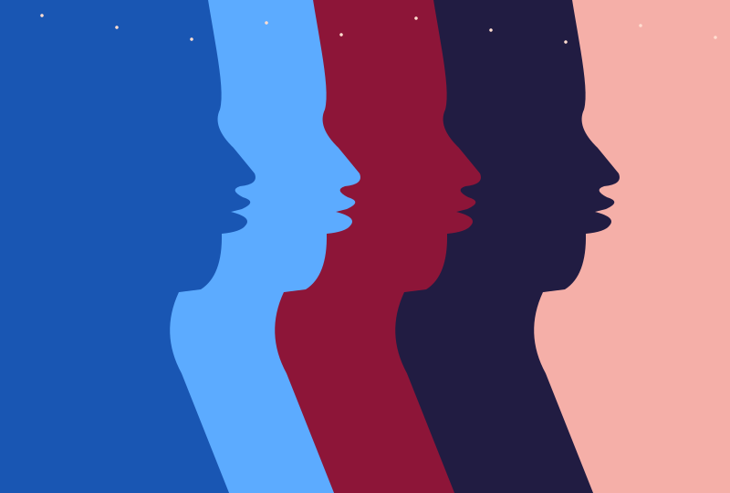
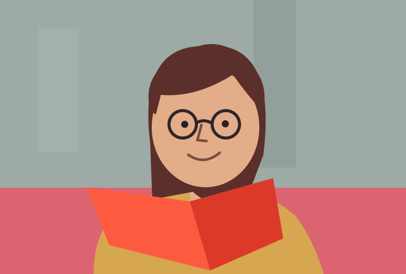

نزدیکی
شنیدن فصلهافصلهای روایت
پیشدرآمد صوتی
یک پروژه، چندین صدا
با یک میکروفن و زمانی برای شنیدن مینشینیم پای روایت آدمها. هر فصل از پرسشی ساده شروع میشود.

«گاهی قصهٔ اصلی درست وقتی شروع میشود که فکر میکنیم گفتوگو تمام شده.»
از دفترچهٔ روایت۴فصل برای شنیدن
۴راوی این مجموعه
۱پرسش در هر روایت
نگاهی نزدیکتر
قصهات را برایمان تعریف کن.
برای فصل بعدی دنبال یک صدای تازهایم.
من هم روایت دارمتو چه قصهای داری؟
موضوع و چند جمله از روایتت را وارد کن و فایل پیشنهادت را بگیر.
 انتخاب این قالب
انتخاب این قالب